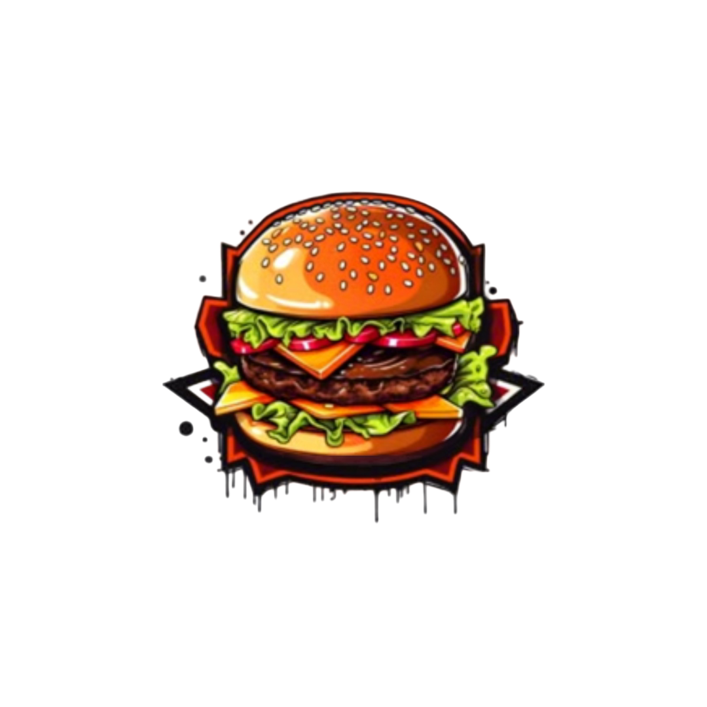

inicio
cardapio
promoções
Avaliações
🛒
Meu-fi-lanches
Sua lanchonete favorita de
Moc!
Lanches, pizzas e muito mais para saciar a sua fome
Ver Cardápio ➔

Meu-fi-lanches
Em breve, nossos canais oficiais de contato estarão aqui.
Fechar